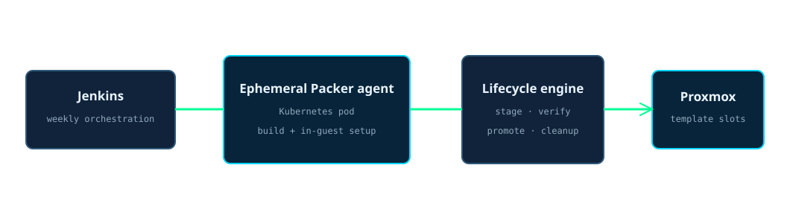
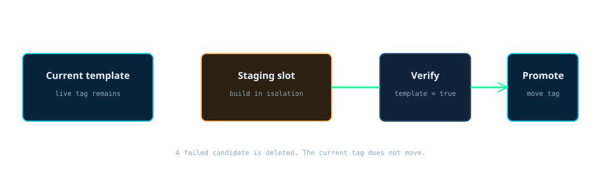

The Windows template factory
The template factory rebuilds Windows golden images without taking the current provisioning image out of service.
A weekly Jenkins pipeline starts an ephemeral Packer agent in Kubernetes. For each supported Windows release, it chooses the inactive template slot, builds and patches a new image there, verifies the result against Proxmox, and only then moves the live tag. Provisioning resolves that tag instead of a fixed virtual-machine ID, so a failed build leaves the last verified image in place.
Measured from the generated project inventory at publish: 3 managed Windows variants. The successful build measured on 2026-08-25 took 6,422 seconds, about 107 minutes.
How to read it in thirty seconds
Where the factory runs
Jenkins owns the schedule and creates a short-lived agent pod in the cluster. The pod carries Packer, the Proxmox plugin, Vault tooling, Python, and SSH. Packer drives the unattended Windows installation and in-guest preparation. A separate lifecycle script reads authoritative Proxmox state and controls staging, verification, promotion, and cleanup.

The seven-step template run
- Jenkins checks out the repository.
The pipeline, Packer definition, build scripts, and per-release variables come from source control.
- The backup guard checks the build window.
The lifecycle engine refuses to start a release when an active or approaching backup would overlap the long image build.
- The inactive slot becomes staging.
The current live tag identifies the slot in service. The other slot receives a neutral staging tag.
- Packer builds a clean Windows image.
The guest installs updates and runtime tooling, settles pending work, then runs Sysprep generalize and shuts down.
- The lifecycle engine verifies the result.
It reads the current node configuration rather than the lagging cluster resource cache, because that cache can briefly report a converted template as an ordinary virtual machine.
- The live tag moves.
The verified staging template receives the live role tag first. The former live template is then marked as the previous fallback. If the promoted image proves bad, the live tag moves back to the previous image and provisioning follows it.
- Failure cleans staging and preserves service.
A failed, timed-out, or aborted build is removed from the staging slot. The live tag never moved, so provisioning keeps using the previous verified template.
The tag move is the deployment

How it runs now
| When | What runs | What a quiet result means |
|---|---|---|
| Weekly | Jenkins starts the template pipeline and handles supported releases one at a time. | No concurrent build can compete for a staging slot or overload the shared build path. |
| Before each release | The backup guard reads current and scheduled Proxmox backup activity. | The image build begins only when its full safety horizon is clear. |
| During the build | Packer installs Windows, updates it, adds runtime initialization, and generalizes the guest. | The live tag still points at the previous verified image. |
| After verification | The lifecycle engine moves the live tag and marks the former live image as previous. | New provisioning runs resolve the new template without changing their own configuration. |
| On failure | The pipeline captures diagnostics and cleans the staging object. | Provisioning remains available through the unchanged live tag. |
What the first design got wrong
The patch-in-place loop accumulated state
The first design repeatedly booted, patched, generalized, and shut down the same template. Sysprep limits, pending Windows work, and one failed patch cycle could turn image maintenance into a provisioning dependency.
The replacement
I separated the candidate from the current image. The factory now rebuilds into an inactive slot and treats tag promotion as a controlled deployment.
The prevention built into the run
Neutral staging tags, authoritative verification, serial builds, bounded timeouts, backup-window checks, and cleanup all fail before the live tag moves.
What I would do differently
I would have designed the image as a replaceable release artifact from the beginning. The important abstraction was never the template number. It was the stable role that provisioning needed, backed by a verified current image and a recoverable previous image.